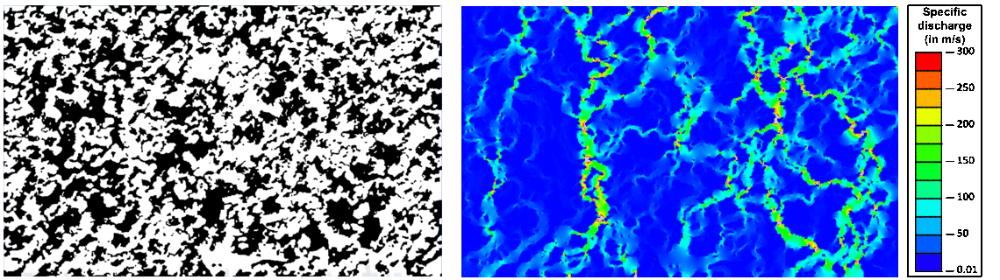
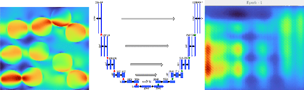
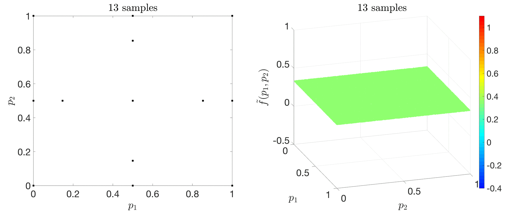
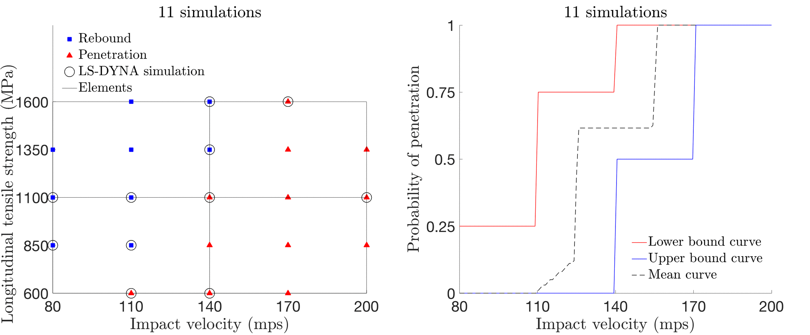
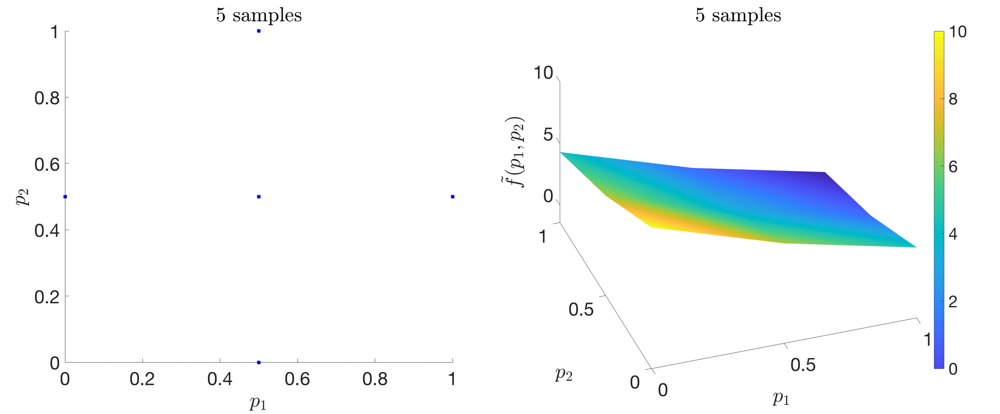
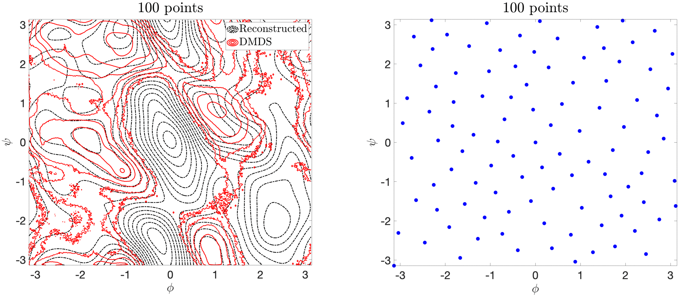
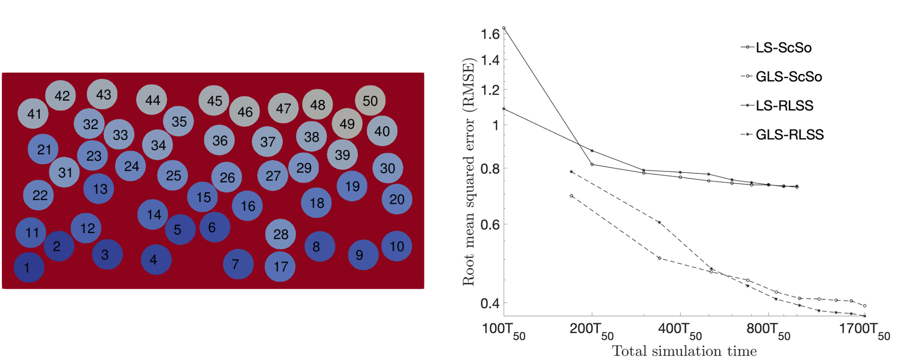

<!DOCTYPE HTML>
<!--
	Read Only by HTML5 UP
	html5up.net | @ajlkn
	Free for personal and commercial use under the CCA 3.0 license (html5up.net/license)
-->
<html>
	<head>
		<title>Anindya Bhaduri</title>
		<meta charset="utf-8" />
		<meta name="viewport" content="width=device-width, initial-scale=1, user-scalable=no" />
		<link rel="stylesheet" href="assets/css/main.css" />
		<link rel="stylesheet" href="assets/css/style.css" />
	</head>
	<body class="is-preload">

		<!-- Header -->
			<section id="header">
				<header>
					<span class="image avatar"></span>
					<h1 id="logo"><a href="#">Anindya Bhaduri</a></h1>
					<p>The Johns Hopkins University <br /></p>
				</header>
				<nav id="nav">
					<ul>
						<li><a href="#one" class="active">About</a></li>
						<li><a href="#two">Education and CV</a></li>
                        <li><a href="#three">Tools/Skills</a></li>
                        <li><a href="#four" class="active">Research summary</a></li>
						<li><a href="#five">Projects</a></li>
						<li><a href="#six">Publications</a></li>
						<li><a href="#seven">Collaborations</a></li>
						<li><a href="#eight">Contact</a></li>
					</ul>
				</nav>
				<!-- <footer>
					<ul class="icons">
						<li><a href="#" class="icon fa-twitter"><span class="label">Twitter</span></a></li>
						<li><a href="#" class="icon fa-facebook"><span class="label">Facebook</span></a></li>
						<li><a href="#" class="icon fa-instagram"><span class="label">Instagram</span></a></li>
						<li><a href="#" class="icon fa-github"><span class="label">Github</span></a></li>
						<li><a href="#" class="icon fa-envelope"><span class="label">Email</span></a></li>
					</ul>
				</footer> -->
			</section>

		<!-- Wrapper -->
			<div id="wrapper">

				<!-- Main -->
					<div id="main">

						<!-- One -->
							<section id="one">
								<div class="container">
									<header class="major">
										<h3>
                                            <span class="short-text">
                                                <!--
                                                <span class="image">
                                                    
                                                </span>
                                                -->
                                                <span class="image avatar">
                                                </span>
                                                About
                                            </span>
                                        </h3>
                                            <span class="full-text">
                                                <!--
                                                <span class="image">
                                                    <h3 style="margin-top: -0em;">
                                                        About
                                                    </h3>
                                                </span>
                                                -->
                                                <h3 style="margin-top: -0em;">
                                                    About
                                                </h3>
                                            </span>
									</header>
									<p align="justify" style="color: black;">I am a <i> Postdoctoral fellow</i> at <i>Johns Hopkins University</i> working with <a href="https://engineering.jhu.edu/case/faculty/lori-graham-brady/" target="_blank">Dr. Lori Graham-Brady</a> in the Department of Civil and Systems Engineering. I am currently working on implementing deep learning applications in computational mechanics. <br> <br> I received my Ph.D. at Johns Hopkins working on developing adaptive surrogate modeling algorithms for efficient uncertainty propagation.</p>
									<p align="justify" style="color: black;"> <i> I am looking for full-time employment positions beginning Spring, 2021.</i></p>
                                </div>
                            </section>


						<!-- Two -->
							<section id="two">
								<div class="container">
									<h3>Education and CV<br>
									<a href="https://drive.google.com/file/d/1CtJM7eJOUmGVOdM9M3eJrzsvxMgve6Cd/view?usp=sharing" target="_blank"> <font size = 4><i><u>Click here for detailed CV</u></i></font></a></h3>
									<ul>	
										<li align="justify" style="color: black;"> Ph.D., Civil and Systems Engineering - Advisor: Dr. Lori Graham-Brady, The Johns Hopkins University, USA </li>
										<li align="justify" style="color: black;"> M.S., Civil and Systems Engineering - The Johns Hopkins University, USA </li>
										<li align="justify" style="color: black;"> M.Tech., Applied Mechanics - Indian Institute of Technology (IIT), Delhi, India </li>
										<li align="justify" style="color: black;"> B.E., Mechanical Engineering - Jadavpur University, India </li>
									</ul>
									
								</div>
							</section>
                            
                        <!-- Three -->
                            <section id="three">
                                <div class="container">
                                    <h3>Tools/Skills</h3>
                                    <ul>
                                        <li align="justify" style="color: black;"> <i>Programming</i>: Python, R, MATLAB, Abaqus, Fortran, Tensorflow/Numpy/Pandas/Scikit-learn/Keras </li>
                                        <li align="justify" style="color: black;"> <i>Domain knowledge</i>: Deep learning, machine learning, uncertainty propagation, surrogate modeling, design of experiments, sensitivity analysis, high dimensional interpolation and approximation, bayesian statistics</li>
                                    </ul>
                                </div>
                            </section>
                            
                        <!-- Four -->
                            <section id="four">
                                <div class="container">
                                    <h3>Research summary</h3>
                                    <div class="features">
                                        <article>
                                            <div class="inner">
                                                <p align="justify" style="color: black;"> Propagation of <i>uncertainty/variability</i> from input
                                                parameters to output quantities in data (simulated or real) is essential for
                                                characterizing the underlying system. For complex systems, this
                                                requires lots of data, which can be prohibitively expensive. Thus, for effective uncertainty propagation,
                                                <i>surrogate modeling</i> is used to construct an efficient mathematical model - characterizing the system with minimal data.
                                                <br>My interest lies at the intersection of <i>machine learning and uncertainity quantification</i>, specifically in developing surrogate modeling approaches using <i>deep neural networks,
                                                    stochastic collocation methods, etc. coupled with adaptive parameter sampling</i> to tackle problems in
                                                    fields like solid mechanics, epidemiology, and molecular dynamics.
                                                </p>
                                            </div>
                                            <!--
                                            <a class="image"></a>
                                                <p align="left" style="font-size: 10pt; color: black; margin-top: -1em; line-height: 1;"> Deep learning based reconstructed microstructures (left) and corresponding fluid flow simulations (right)</p>

                                            <a class="image"></a>
                                                <p align="left" style="font-size: 10pt; color: black; margin-top: -1em; line-height: 1;">True stress map (left) and evolution of precdicted stress map (right) using the U-net deep architecture (middle)</p>
                                            -->
                                        </article>
                                    </div>
                                </div>
                            </section>
                            
						<!-- Five -->
							<section id="five">
								<div class="container"> 
									<h3> Projects
								<!--
                                    <br>
                                    <a href="" style="padding-top: -20em;"> <font size = 4><i><u>Click here for GitHub repository</u></i></font></a>
                                -->
                                    </h3>
									<br>
									<div class="features">
                                        <article >
                                            <div class="inner">
                                                <h4> <u> Deep learning based stress field prediction of fiber-reinforced composite materials</u></h4>
                                                <a class="image"></a>
                                                <p align="justify" style="color: black;"> A U-net deep architecture has been trained from scratch for mapping composite material images to stress field images. Sensitivity of different training data combonations has been studied on the prediction results.
                                                </p>
                                            </div>
                                        </article>
                                        <article >
                                            <div class="inner">
                                                <h4> <u> Reconstructing random multiphase materials using deep learning</u></h4>
                                                <a class="image"></a>
                                                <p align="justify" style="color: black;"> A transfer learning based microstructure reconstruction approach has been implemented using a pretrained VGG19 network. This method is capable of reconstructing large sized images efficiently for large-scale analysis.</p>
                                            </div>
                                        </article>
										<article >
											<div class="inner">
												<h4> <u> A stochastic collocation approach with adaptive mesh refinement</u></h4>
                                                <a class="image"></a>
												<p align="justify" style="color: black;"> An efficient stochastic collocation method with adaptive mesh refinement (SCAMR) has been developed to deal with high dimensional stochastic systems with discontinuities. The method employs a dimensionality reduction strategy to decompose the original high-dimensional problem to a number of lower-dimensional subproblems. </p>
											</div>
										</article>
                                        <article>
                                            <div class="inner">
                                                <h4> <u> Composite plate penetration under projectile impact</u></h4>
                                                <a class="image"></a>
                                                <p align="justify" style="color: black;"> An adaptive domain-based decomposition and classification method, combined with sparse
                                                    grid sampling, is used to develop an efficient classification surrogate modeling
                                                    algorithm for discrete output systems. As an application problem, the probabilistic
                                                    velocity response (PVR) curve or the V0-V100 curve is generated for S-2 glass/SC-15 epoxy composite plates under ballistic
                                                    impact. </p>
                                            </div>
                                        </article>
										<article>
											<div class="inner">
												<h4> <u> An adaptive collocation method based on derivative estimates</u></h4>
                                                <a class="image"></a>
												<p align="justify" style="color: black;"> The proposed methodology tracks discontinuities while also avoiding unnecessary function evaluations in smoother regions of the stochastic space by using a finite difference based one-dimensional derivative estimation technique.</p>
											</div>
										</article>
										<article>
											<div class="inner">
												<h4> <u> Free energy landscape reconstruction</u></h4>
                                                <a class="image"></a>
												<p align="justify" style="color: black;"> A modified single sweep approach using space-filled design and weighted reconstruction for generating free energy landscapes.</p>
											</div>
										</article>
                                        <article>
                                            <div class="inner">
                                                <h4> <u> On the usefulness of gradient information in surrogate modeling</u> </h4>
                                                <a class="image"></a>
                                                <p align="justify" style="color: black;"> The primary goal is to investigate whether additional gradient information obtained at a relatively small cost helps in generating surrogates of better quality compared to those obtained without any gradient information. The surrogate considered here describes the variation of the homogenized stress at a given input strain as a function of the fiber/matrix interface damage parameters in a multi-fiber reinforced composite model</p>
                                            </div>
                                        </article>

									</div>
								</div>
							</section>

						<!-- Six -->
							<section id="six">
								<div class="container">
									<h3>Publications</h3>
									<h3><a href="https://scholar.google.com/citations?user=sAuq57EAAAAJ&hl=en"> <font size = 4.5><i><u>Google Scholar profile</u></i></font></a></h3>
									<ul style="color: black;">
                                        
                                        <li > <u>Bhaduri, Anindya</u>, and Graham-Brady, Lori. "<b><font color="#000000">Stress field prediction of composite materials using deep learning.</font></b>" <i>Under preparation</i>.</li>
                                        
                                        <li > <u>Bhaduri, Anindya</u>, et al. "<b><font color="#000000">An efficient optimization based microstructure reconstruction approach with multiple loss functions</font></b>." <i>To be submitted</i>. </li>

                                        <li > Bhattacharya, Amartya, <u>Bhaduri, Anindya</u>, et al. (2021). "<b><font color="#000000">Failure modelling and sensitivity analysis of ceramics under impact.</font></b>" <i>Journal of Applied Mechanics</i>, Accepted. </li>

                                        <li > <u>Bhaduri, Anindya</u>, et al. (2020). "<b><font color="#000000">Probabilistic modeling of discrete structural response with application to composite plate penetration models.</font></b>" <i> arXiv preprint</i>, arXiv:2011.11780. </li>

                                        <li >  Lin, Gary, <u>Bhaduri, Anindya</u>, et al. (2020). "<b><font color="#000000">Modeling the "Bomb-Like" Dynamics of COVID-19 with Undetected Transmissions and the Implications for Policy.</font></b>" <i>medRxiv</i>, doi: 10.1101/2020.04.05.20054338.</li>
                                        
										<li > <b>Bhaduri, Anindya</b>, et al. (2018). <a href="https://www.sciencedirect.com/science/article/pii/S0021999118303814" target="_blank">"<b><font color="#000000">Stochastic collocation approach with adaptive mesh refinement for parametric uncertainty analysis.</font></b>"</a> <i>Journal of Computational Physics</i>, 371, 732-750.</li>
                                        
										<li > <u>Bhaduri, Anindya</u>, and Graham-Brady, Lori. (2018). "<b><font color="#000000">An efficient adaptive sparse grid collocation method through derivative estimation.</font></b>" <i>Probabilistic Engineering Mechanics</i>, 51, 11-22.</li>
                                        
										<li > <u>Bhaduri, Anindya</u>, et al. (2020). "<b><font color="#000000">On the usefulness of gradient information in surrogate modeling: Application to uncertainty propagation in composite material models.</font></b>" <i>Probabilistic Engineering Mechanics</i>, 60, 103024.</li>
                                        
										<li > <u>Bhaduri, Anindya</u>, et al. (2020). "<b><font color="#000000">Free energy calculation using space filled design and weighted reconstruction: a modified single sweep approach.</font></b>" <i>Molecular Simulation</i>, 46(3), 193-206. </li>
									</ul>
								</div>
							</section>

						<!-- Seven -->
							<section id="seven">
								<div class="container">
									<h3> Collaborations </h3>
                                    
									<ul>
                                        <font color="#000000">
										<li > Michael D. Shields - The Johns Hopkins University, USA</li>
										<li > Mike Kirby - University of Utah, USA</li>
										<li > Yanyan He - New Mexico Tech, USA</li>
										<li > Philippe Geubelle - University of Illinois at Urbana Champaign, USA</li>
										<li > Cameron Abrams - Drexel University, USA</li>
										<li > John Gillespie - University of Delaware, USA</li>
										<li > Bazle Haque - University of Delaware, USA</li>
                                        </font>
									</ul>
								</div>
							</section>

						<!-- Eight -->
							<section id= "eight" >
								<div class="container">
                                    <font color="#000000">
                                        <h3> Contact Me</h3>
                                        <p> Email: <b> <font color="#000000">anindya07bhaduri@gmail.com </font></b> <br>
                                            LinkedIn: <a href="https://www.linkedin.com/in/anindya-bhaduri/" target="_blank"> <b><font color="#000000">linkedin.com/in/anindya-bhaduri/</font></b></a></p>
                                    </font>
								</div>
							</section>


					</div>

				<!-- Footer -->
					<section id="footer">
						<div class="container">
							<ul class="copyright">
								<li>&copy; Anindya. All rights reserved.</li><li>Design: <a href="http://html5up.net">HTML5 UP</a></li>
							</ul>
						</div>
					</section>

			</div>

		<!-- Scripts -->
			<script src="assets/js/jquery.min.js"></script>
			<script src="assets/js/jquery.scrollex.min.js"></script>
			<script src="assets/js/jquery.scrolly.min.js"></script>
			<script src="assets/js/browser.min.js"></script>
			<script src="assets/js/breakpoints.min.js"></script>
			<script src="assets/js/util.js"></script>
			<script src="assets/js/main.js"></script>
			<script src="assets/js/ab.js"></script>

	</body>
</html>
